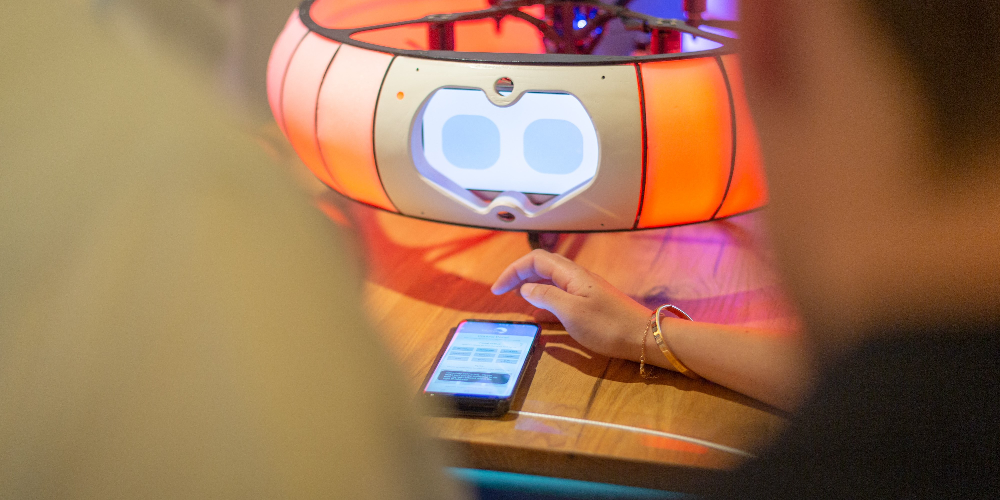
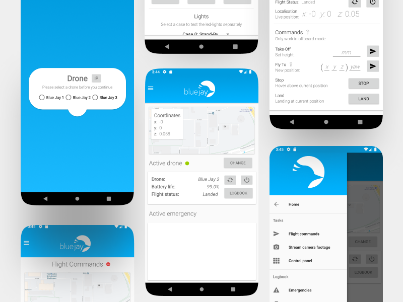

Meet Blue Jay


An intelligent drone companion that empowers and assists healthcare workers in their daily tasks.
At Blue Jay, my team and I were committed to creating a drone that can assist healthcare workers in their daily tasks and can serve as an an intelligent companion for patients. The goal at Blue Jay is to expand the capabilities of intelligent systems by developing drones that are safe, autonomous, interactive, and helpful.
At the time, my role as an Interaction Designer was specifically created to assist the Blue Jay-team in its early days as a start-up student-team. During my time there, we worked on many different scenarios to explore the possibilities of using drones in healthcare and beyond. One of the scenarios we focused on was the use of drones to support nurses in time-consuming routine tasks, such as distributing medicines in healthcare facilities and doing simple checks. By using drones for these tasks, healthcare workers could focus more on personal patient care, and patients would have more time to interact with workers. Given the environment in which Blue Jay would operate, the drone and its interaction interfaces had to be carefully and sensibly designed in a way that balanced trust, predictability and approachability with a subtle and non-invasive presence. The core underlying idea of Blue Jay is that the drone should be able to do operate autonomously, meaning that it should therefore also be able to detect emergencies happening around the facility and report that back to the nurses efficiently, effectively and intuitively.
This meant that the Blue Jay-drone had to be visibly present and approachable, yet perceived as safe, trustworthy and non-invasive to the personal space and privacy of patients and worker's. That is where my role as an Interaction Designer came in, as we had to innovate and find new ways in which healthcare workers and patients could interact with the drone intuitively and without a traditional controller. My team and I achieved this by installing a dynamic lighting scheme and a responsive LCD-screen with eyes on the drone. The state of the eyes and the lights corresponded to the current state of the drone (e.g., if it was performing a task or if it was responding to an event it had detected). For example, the drone would turn green and smile at a patient or worker once it had processed a command succesfully and proceeded with executing it. The drone also responded to input from patients through emotion detection and speech recognition using a camera and a microphone.
Through an iterative user-centered design process - including several phases of user interviews, creating personas, storytelling, and prototyping - we created different lighting- and 'eye'-schemes for the drone that represented different 'emotional' states for the drone. As part of the conceptualization of these 'emotional states', these schemes were presented to patients and workers in different scenarios, and through a collaborative process we finetuned the responsiveness of the drone to a large variety of different situations.

Additionally, I worked as a Mobile App Developer for Blue Jay and developed the Blue Jay Android-app, which simplifies communication between users and drones. The app allows real-time tracking of drones, easy commands for the drone's operations, and archives all historical data on emergencies detected by the drone. The Blue Jay App makes it easier for inexperienced users to interact with drones safely, efficiently, and intuitively. I tested the Blue Jay using a variety of methods, including think-aloud interviews with healthcare and emergency staff and A/B-testing.
